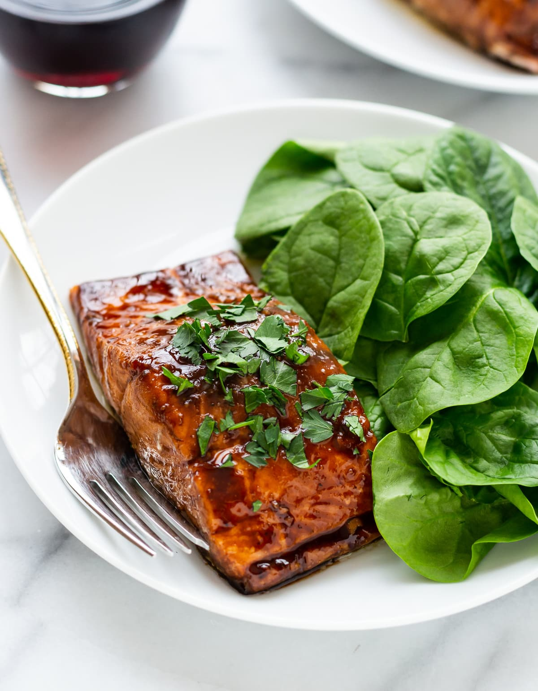

Balsamic Glazed Salmon

A delcious Salmon Recipe that cooks up in just 20 minutes!
This glazed salmon recipe, while impressive enough for a date night-in, is also perfect for busy weeknights.
Ingredients
- Salmon
- Balsamic Vinegar
- Honey
- Garlic
- Dijon Mustard
Instructions
- In a small saucepan, saute garlic in olive oil.
- Now, add the rest of the balsamic glaze ingredients: balsamic vinegar, honey (or maple syrup or brown sugar), Dijon mustard, salt, and pepper. Bring the balsamic mixture to a simmer, then let reduce for 4 minutes, until it forms a sticky glaze. Do not let the balsamic reduce too long, or it may seize.
- Drizzle on the balsamic reduction, brushing the salmon filets generously.
- Bake balsamic salmon at 400 degrees F for 15 minutes, until its internal temperature reaches 140 degrees F on an instant read thermometer (salmon is considered cooked at 145 degrees F but its temperature will rise as it rests).
- Five minutes into the cooking time, baste the salmon with the balsamic sauce again.
- Garnish with fresh parsley and serve. ENJOY!
Back to Home